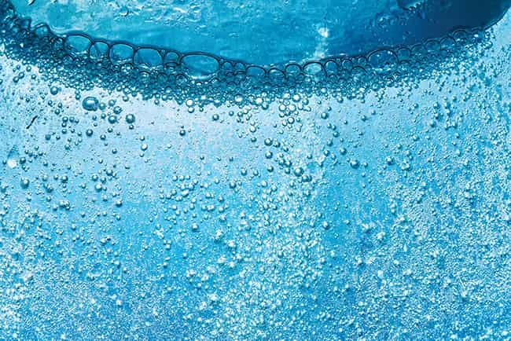

Breakthrough nano-scale bubble technology delivering unprecedented dissolved gas concentrations — oxygen, ozone, and air — directly into water for transformative improvements in aquaculture, wastewater treatment, and industrial processes.

Nanobubbles (also called ultra-fine bubbles, UFB) have diameters between 70 and 200 nanometres — approximately 1,000 times smaller than a fine bubble diffuser output. At this scale, the physics of bubble behaviour changes fundamentally: nanobubbles carry a strong negative surface charge that keeps them stably suspended in water without rising, enabling dissolved gas concentrations well above conventional saturation limits and contact times orders of magnitude longer than conventional aeration.
Genoasis supplies nanobubble generators based on proven hydrodynamic cavitation technology. Systems are available for oxygen nanobubbles for aquaculture and biological treatment intensification, ozone nanobubbles for advanced oxidation and disinfection, and air nanobubble generators for surface cleaning and irrigation enhancement. All units feature compact skid-mounted designs with stainless steel wetted parts and simple integration into existing pipework.
Inline oxygen nanobubble generators producing dissolved oxygen concentrations of 20–40 mg/L in water — far above conventional air-saturation limits. Compact units from 1 to 200 m³/h flow capacity for aquaculture ponds, bioreactors, and process streams.
Combined ozone generator and nanobubble injection systems for advanced oxidation treatment of organics, colour, taste, odour, and micropollutants. Nanobubble delivery dramatically increases ozone transfer efficiency and contact time versus conventional diffusers.
Cost-effective air-based nanobubble generators using compressed air or blowers for soil remediation irrigation, industrial surface cleaning, and flotation enhancement in dissolved air flotation (DAF) systems.
Turnkey oxygen nanobubble oxygenation systems for recirculating aquaculture systems (RAS) and open pond aquaculture. Achieve target dissolved oxygen levels of 8–12 mg/L with significantly lower oxygen consumption than paddlewheel aerators.
Nanobubble aeration retrofit systems for activated sludge tanks, MBR reactors, and SBR systems. Increase biological treatment capacity by 30–50% without tank expansion by delivering supersaturated dissolved oxygen directly to the biomass.
Oxygen-enriched nanobubble water for drip and sprinkler irrigation systems. Improves root zone oxygen levels, suppresses anaerobic pathogens, enhances nutrient uptake, and has been shown to increase crop yields in field trials.
Nanobubbles in the 70–120 nm range exhibit neutral buoyancy and remain suspended in water for hours or days, maximising dissolved gas transfer and contact time.
Unlike macro and micro-bubbles that rise rapidly, nanobubbles remain uniformly distributed throughout the water column, ensuring consistent dissolved gas delivery at all depths.
The nanometre scale produces surface areas exceeding 1,000 m²/L of gas, enabling unprecedented gas-liquid mass transfer rates for both oxygen and reactive gas delivery applications.
Nanobubble systems transfer 85–95% of the injected gas into dissolved form compared to 20–35% for conventional fine bubble diffusers, dramatically reducing gas consumption and operating costs.
Contact our team for pricing, availability, and technical specifications tailored to your requirements.